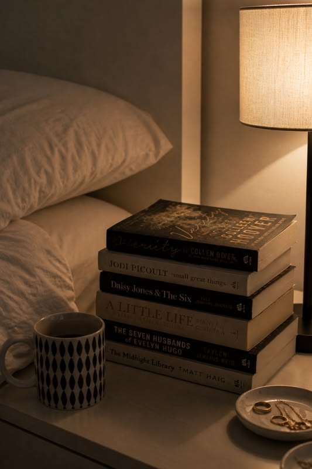
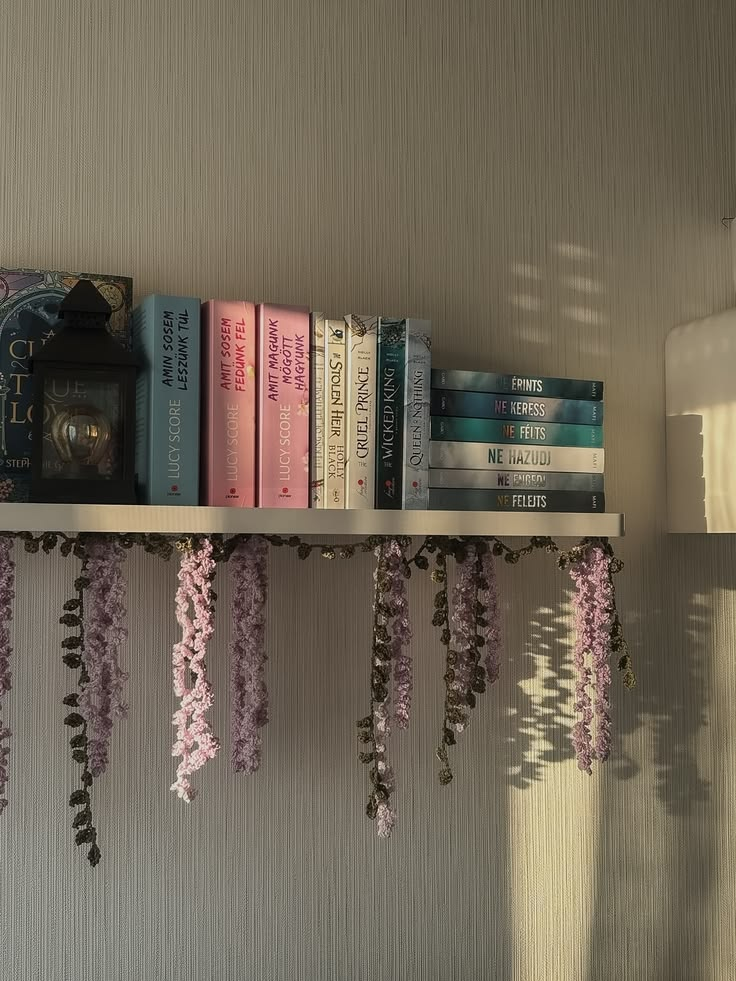
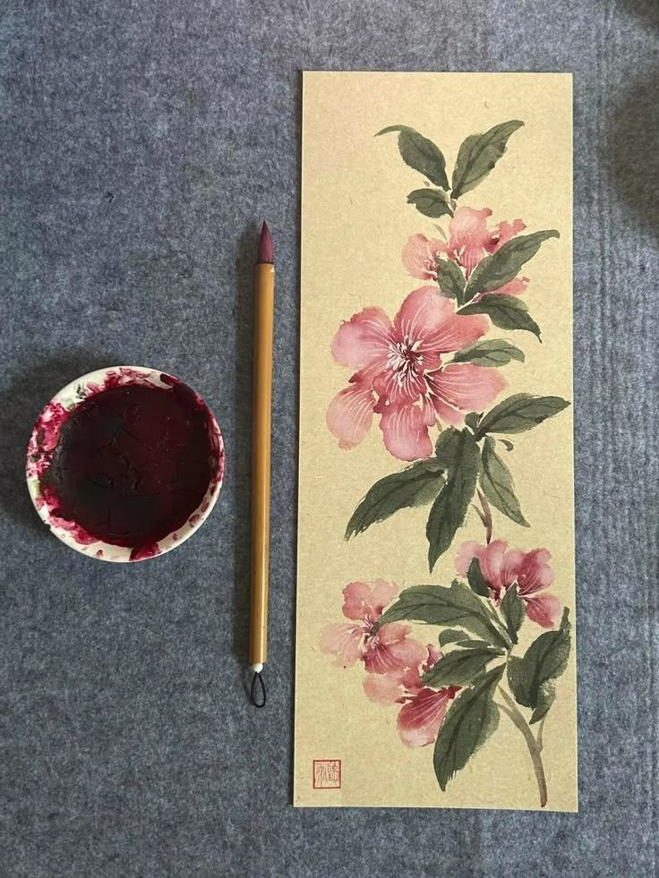
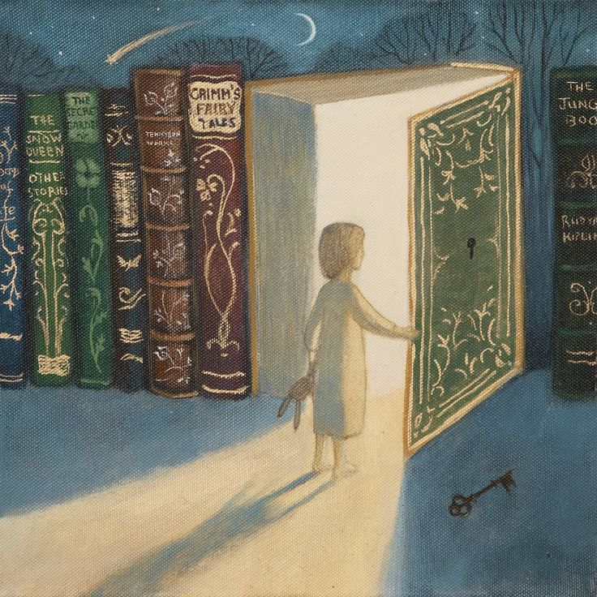

What: My Hobby
Reading is one of my favorite ways to relax. I especially like fantasy books and books that have a romance subplot. I enjoy stories where there is a bigger world to discover, but I also want characters whose relationships actually make me care about what happens next.
AI prompt used: "Create a cozy photorealistic photograph of an open book on a soft blanket with warm natural lighting and a peaceful reading mood."
What I Like to Read
- Fantasy with interesting worlds and magic.
- Romance that adds emotion to the main story.
- Books with characters I can get attached to.
What Makes a Book Fun for Me
I like when a book gives me something to escape into. A good fantasy setting can make a normal day feel more exciting, while a romance subplot gives me another reason to keep reading. I do not need every book to be perfect. I mostly want a story that keeps me thinking about it after I put it down.
Who: Me as a Reader
I am the type of reader who can say I will read "just one more chapter" and then realize I have been reading for much longer than planned. My favorite books usually combine an interesting plot with characters I actually care about.
AI prompt used: "Create a photorealistic fantasy landscape with distant mountains, a glowing moon, subtle stars, and a magical but peaceful atmosphere."
My Reader Personality
- I care about characters and their development.
- I like a plot that keeps moving.
- I appreciate romance when it fits naturally into the story.
My Favorite Combination
My favorite combination is fantasy plus romance. I like having the larger adventure or mystery happening in the background while the characters build relationships and figure out what they mean to each other. It gives the story more than one thing to look forward to.
When: My Reading Time
I do not have one perfect reading schedule. I usually read when I have a break from schoolwork or when I want to wind down at night.

AI prompt used: "Create a photorealistic cozy nighttime reading scene with a book, warm lamp light, blanket, and calm bedroom atmosphere."
When I Usually Read
| Time | What I Usually Do |
|---|---|
| Evening | Read a few chapters to relax. |
| Weekend | Read for longer when I have more free time. |
| Breaks | Read instead of scrolling on my phone. |
Seasonal Reading
My reading mood changes with the season. I tend to want cozy, emotional stories when the weather gets colder. During warmer months, I like books that feel adventurous and easy to get into. Either way, a good book can fit into any season.
Where: Places I Like to Read
The best reading spot for me is somewhere comfortable where I can focus. I do not necessarily need complete silence, but I do need a place where I can settle in without constantly being interrupted.

AI prompt used: "Create a photorealistic cozy library with tall bookshelves, comfortable seating, warm lighting, and a peaceful reading atmosphere."
My Favorite Spots
- My bed or a comfortable chair.
- A quiet library corner.
- A café when I want some background noise.
What Makes a Good Reading Place?
Comfort matters a lot. I want enough light to read without straining my eyes, a comfortable place to sit, and as few distractions as possible. Having a drink nearby is also a bonus. The main goal is to make it easy to stay focused on the story.
How: How I Read
I like to keep reading simple. I choose a book based on the story, the genre, or a recommendation, then give myself enough time to actually get into it.

AI prompt used: "Create a photorealistic open fantasy book with a simple bookmark, a few sticky notes, and warm natural lighting."
My Simple Reading Process
- Pick a book that sounds interesting.
- Read a few chapters before deciding how I feel about it.
- Keep reading when I become invested in the characters or plot.
- Write down a title if I want to remember or recommend it.
Physical Books vs. Digital
I like physical books because there is something satisfying about seeing my progress through the pages. Digital books are convenient when I am traveling or carrying a lot of school stuff. I can enjoy both, so I usually choose based on what is easiest at the time.
Why: Why I Love Reading
Reading gives me a break from school, work, and everyday responsibilities. It lets me focus on something completely different for a while.

AI prompt used: "Create a photorealistic cozy reading scene that represents imagination and escaping into a story, with a book, soft lighting, and dreamy details."
Three Reasons
- Escape: I can step into another world for a while.
- Relaxation: Reading helps me slow down.
- Connection: I get attached to characters and their stories.
"A good book is one that makes me forget I am checking the time."
Reading Beyond Entertainment
Books can also help me understand different personalities, relationships, cultures, and situations. Even when a story is completely fictional, it can still make me think about real life in a different way.
AI Prompts
AI was used to help create the artwork and brainstorm some of the site content. I kept the final writing personal and focused on my actual interest in reading fantasy books and romance subplots.
AI prompt used: "Create a photorealistic romantic reading scene with an open book, soft pink and cream colors, warm lighting, and a cozy atmosphere."
Content Brainstorming Prompt
Help me plan a seven-section hobby website about my
love of reading, especially fantasy books and romance
subplots. Keep the ideas personal, simple, and
appropriate for a college student.
Design Prompt
Suggest a cozy color palette and visual direction for
a reading website that feels bookish and different
from a typical technology website.
Accessibility Prompt
Review this hobby website for semantic HTML,
keyboard-accessible navigation, meaningful image alt
text, responsive design, and a single-page navigation
pattern.